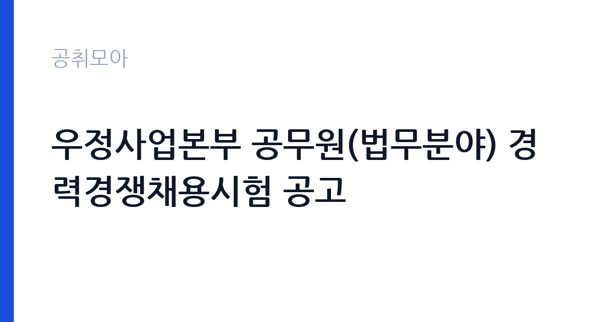

[국가기관] 우정사업본부 공무원(법무분야) 경력경쟁채용시험 공고
과학기술정보통신부 우정사업본부 · 세종 · 마감 2026-11-13 (D-10) · 출처 나라일터

한눈에 보는 모집 조건
| 기관 | 과학기술정보통신부 우정사업본부 |
|---|---|
| 공고명 | 우정사업본부 공무원(법무분야) 경력경쟁채용시험 공고 |
| 고용형태 | 정규직 |
| 근무지 | 세종 |
| 게시일 | 2026-11-03 |
| 마감일 | 2026-11-13 (D-10) |
지원자격, 이렇게 읽으세요
- 행정주사 1명
- 접수 ~2026-11-13 마감
- 세부 조건은 원문 공고문 확인
정규직 채용은 기간의 정함이 없는 근로계약을 전제로 합니다. 수습 기간을 두고 평가한 뒤 정규직으로 확정하는 절차가 일반적이며 기관의 인사 규정과 임금 체계를 적용받습니다. 이번 공고는 과학기술정보통신부 우정사업본부에서 직접 진행하는 자체 전형으로, 응시자격과 제출서류는 공고문에 항목별로 제시됩니다. 이 시험은 경력경쟁채용으로 응시요건이 경력으로 제시되어 있으며, 세부 자격 기준은 공고문에 정리되어 있습니다. 법학 전공과 법무 업무 경력, 관련 자격 보유 여부가 평가의 출발점이 됩니다. 국가공무원 임용 결격사유와 병역 요건이 적용되고, 임용일부터 근무가 가능해야 합니다. 접수 기간과 제출서류 목록이 원문에 제시되어 있으므로 그대로 준비하십시오. 서류는 접수 마감 이후 보완이 되지 않으므로 자격 요건과 증빙 서류를 마감 전에 모두 갖춰야 합니다. 공고문에 명시된 우대 사항은 해당 여부를 확인해 증빙을 첨부해야 가점이 반영됩니다. 자격증은 유효 기간과 등록 상태를 확인해야 합니다. 갱신이 필요한 자격이라면 갱신 여부를 먼저 점검하십시오.
이 공고의 포인트
이 공고의 첫 번째 포인트는 고용 형태입니다. 수습 기간 평가를 통과하면 기간의 정함이 없는 신분이 되어 고용이 안정됩니다. 두 번째는 업무 범위가 명확하다는 점입니다. 법무분야 행정주사(경력경쟁) 직무로 채용되므로 배치 이후 담당 업무가 크게 흔들리지 않습니다. 세 번째는 근무지입니다. 세종 지역 근무로 수도권 공고에 비해 지원자 분포가 넓지 않아 상대적으로 경쟁이 분산되는 경우가 있습니다. 접수 기간이 길지 않아 서류 준비와 자격 확인을 동시에 진행해야 합니다. 같은 직무로 함께 올라온 공고 가운데 접수 마감이 가장 늦은 편이라 준비 시간을 상대적으로 확보할 수 있습니다. 다만 선발 인원이 1명으로 많지 않아 자격을 갖춘 지원자가 몰리면 경쟁률이 높아질 수 있습니다.
전형은 어떻게 진행되나
서류전형과 면접전형 외에 직무수행능력 평가가 붙는 경우가 있습니다. 평가 방식은 공고문에 구체적으로 적혀 있으므로 어떤 항목에 배점이 높은지 먼저 파악하십시오. 면접에서는 지원 동기보다 실제 업무 경험에 대한 질문이 많고, 답변의 구체성이 평가를 가릅니다. 전형 일정은 서류 마감 이후 빠르게 진행되므로 연락 가능한 번호를 정확히 기재하고 문자와 메일을 수시로 확인해야 합니다. 최종 단계에서는 결격사유 조회와 신체검사가 진행됩니다. 응시 수수료가 있는 경우 환불 기준과 기한이 정해져 있으니 접수 전에 확인하십시오.
원문에서 확인한 전형 방식
우정사업본부 공고 제2026-149호 우정사업본부 공무원(법무분야) 경력경쟁채용시험을 다음과 같이 공고하오니 유능한 인재의 많은 응모 바랍니다. ○ 모집분야 : 법무 ○ 채용직급 : 행정주사 ○ 응시요건 : 경력 ○ 접수기간 : 2026년11월9일 ~ 2026년11월13일 ○ 접수방법 : 등기우편 접수(방문, 택배, 퀵서비스 접수 불가) ○ 문의처 : 044-200-8827 자세한 사항은 공고문을 참고해주시기 바랍니다. 2026년 11월 3일 우정사업본부장
이런 분께 추천해요
- 법무·계약 검토 경력이 있는 분
- 법학 전공이나 관련 자격을 갖춘 분
- 국가공무원 임용 요건을 충족하는 분
지원 전 체크리스트
- 응시자격 요건과 경력 기준을 충족하는가 — 경력은 증명서로 입증해야 합니다
- 수습 기간과 정규직 전환 조건을 확인했는가
- 제출서류 목록을 모두 준비했는가 — 누락 시 서류 단계에서 탈락합니다
- 접수 마감 2026-11-13 이전에 접수 방식을 확인해 제출했는가
모집 일정과 제출 타이밍
접수 마감은 2026-11-13이고 공고는 2026-11-03에 게시되었습니다. 준비 기간 10일 안에 서류 작성, 증빙 발급, 접수를 모두 마쳐야 하므로 주말을 포함해 일정을 미리 나누는 것이 좋습니다. 특히 경력 기술서나 직무수행계획서를 요구하는 공고는 작성에 시간이 걸리므로 첫날 초안을 잡으십시오. 서류 합격자 발표와 면접 사이 간격이 짧은 경우가 많아 면접 예상 질문은 서류 제출 전에 정리해 두는 편이 유리합니다. 마감 직전에는 접속이 몰리므로 여유를 두고 제출하십시오. 접수 첫날에 몰리면 시스템 접속이 지연될 수 있으므로 오전 시간대 제출이 안전합니다. 세종 근무지는 정부청사 인접 지역으로 관련 직무 공고가 꾸준히 나오는 편입니다. 마감까지 2주 안팎이 있어 준비할 시간은 있지만 미루면 촉박해집니다. 선발 인원이 한두 명 수준이라 지원자 개개인의 서류 완성도가 그대로 평가에 반영됩니다.
직무 이해하기: 국가기관
우정사업본부 법무분야 행정주사는 우정사업의 법률 사무를 담당합니다. 우체국 예금·보험 관련 분쟁과 소송 사건을 검토하고, 계약서와 약관의 법적 쟁점을 정리합니다. 민원이나 정보공개 청구에 대한 법적 검토 의견을 작성하고, 규정 개정안을 검토합니다. 우편·금융 사업 관련 판례와 법령 변경 사항을 정리해 부서에 공유하는 일도 포함됩니다. 본부 부서에 배치되어 관련 부서와 협의하며 업무를 진행합니다. 직무 교육은 입사 후 기관 자체 계획에 따라 진행되므로 사전 경험이 없어도 시작할 수 있습니다.
자기소개서 작성 팁
지원서는 법무 경력을 사건과 검토 업무 단위로 정리하는 것이 핵심입니다. 수행한 소송이나 분쟁 사건의 유형, 검토한 계약과 약관, 작성한 법률 의견서를 구체적으로 쓰십시오. 경력경쟁채용은 경력 증명이 곧 평가 자료이므로 직무와 기간이 상세히 기재되도록 준비하십시오. 우정사업의 금융·우편 서비스 구조를 이해하고 있다는 점을 한 문단 더하면 좋습니다. 직무 경험이 많지 않다면 경험의 양보다 과정을 구체적으로 쓰는 편이 낫습니다. 어떤 상황에서 무엇을 판단했고 어떤 결과가 나왔는지 순서대로 서술하면 신뢰가 생깁니다. 지원 동기와 기여 방안은 한 문단씩 짧게 유지하고, 가장 자신 있는 경험에 분량을 몰아주십시오. 마지막 문장은 포부보다 구체적인 실행 계획으로 끝내는 것이 좋습니다.
면접 준비 포인트
면접에서는 법률 검토 실무와 공직 적응을 확인합니다. 계약 조항 해석이 갈릴 때 어떤 근거로 판단했는지, 민원에 대한 법적 검토 의견을 작성한 경험이 있는지 묻습니다. 공기업이나 금융 사업 관련 법령을 다뤄본 경험이 있다면 구체적으로 답하십시오. 우정사업의 공적 성격과 조직 구조를 이해하고 있는지도 확인 대상입니다. 답변은 상황, 판단, 조치의 순서로 정리하면 전달이 분명해집니다. 모르는 질문에는 모른다고 밝히고 확인 방법을 제시하는 편이 억지 답변보다 낫습니다. 마지막에는 근무 의사와 함께 2026-11-13 이후 일정에 언제든 응할 수 있다는 점을 전달하십시오. 모르는 질문에 추측으로 답하면 감점 요인이 되므로, 확인 후 답하겠다고 밝히는 편이 안전합니다.
급여·근무조건 읽는 법
국가공무원 경력경쟁채용으로 임용되면 국가공무원 보수규정의 직급·호봉별 봉급표를 적용받습니다. 행정주사로 임용되면 해당 직급 봉급에 직급보조비·정액급식비·초과근무수당이 더해집니다. 경력경쟁채용은 민간 경력을 호봉으로 환산해 초임 호봉이 정해지므로 경력 증명이 확보되면 초임이 달라질 수 있습니다. 구체적인 호봉 산정 결과는 임용 절차 안내에서 확인하십시오. 2026년 적용 최저임금은 시급 10,320원, 월 환산 2,156,880원(주 40시간·209시간 기준)입니다. 고용노동부 고시 제2025-47호로 확정된 금액입니다. 공고문에 금액이 제시되지 않은 항목은 원문 보수표나 처우 설명에서 확인해야 하며 확인되지 않은 수치는 쓰지 않는 것이 원칙입니다. 비교할 때는 월 급여뿐 아니라 상여·명절휴가비·복지포인트·초과근무수당까지 포함한 연간 총액으로 계산하십시오. 기간제라면 계약 기간 동안의 총액을, 무기계약이라면 호봉 상승과 정년까지의 누적 소득을 기준으로 판단하는 편이 정확합니다.
자주 묻는 질문
- 선발 인원은 몇 명인가요?
공고문 기준 1명입니다. 직종별로 인원이 나뉘는 경우가 있으니 모집분야 항목을 함께 확인하십시오. - 근무지는 어디인가요?
세종 지역의 과학기술정보통신부 우정사업본부 소속 근무지입니다. 세부 주소와 출퇴근 조건은 원문 공고문에서 확인할 수 있습니다. - 보수는 얼마인가요?
채용 신분(정규직)과 기관 임금 규정에 따라 정해지며 구체적인 금액은 공고문 처우 항목에 제시됩니다. 금액이 공개되지 않은 경우에는 원문의 보수표를 확인하십시오.
함께 보면 좋은 공고
[국가기관] 임기제공무원(일반임기제, 통번역 6급, 1명) 경력경쟁채용 공고 — 마감 2026-11-18[국가기관] 2026년도 제7회 국립목포대학교 기간제 채용 공고 (인권센터 상담) — 마감 2026-11-13[국가기관] 2026년 하반기 지역별사업체노동력조사 통계조사관 추가 채용공고 — 마감 2026-11-09출처: 나라일터 공개정보를 바탕으로 공취모아가 정리한 안내글입니다. 모집 조건·일정은 변경될 수 있으니 지원 전 반드시 원문 공고문을 확인하세요. 본 글은 정보 제공용이며 합격을 보장하지 않습니다.